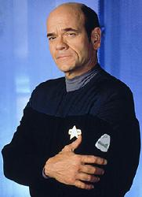

Medico Olografico |
|
|||||
|  |
Dati Personali
Prima attivazione: 2371
(data stellare 48308.2).
Reinizializzazione: 2373 (data
stellare 50252).
Origine del programma: Centro di Oloprogrammazione
Jupiter.
Programmatore: Dr. Lewis Zimmerman, ufficiale della
Flotta Stellare.
Il Medico Olografico non è una persona fisica, bensì una proiezione
olografica dello stesso tipo di quelle utilizzate sulle astronavi quando, in
situazioni di emergenza, ci si trova senza staff medico o quello presente
risulta essere inadeguato. Il Medico Olografico, pienamente cosciente della sua
essenza di ologramma e delle limitazioni cui è sottoposto, ha l'apparenza di un
maschio umano, programmato con le più avanzate tecniche mediche conosciute,
capace di trattare qualsiasi malanno e ferita.
Le capacità del Medico Olografico si devono anche al suo sistema di
memorizzazione basato sulla tecnologia della matrice euristica adattiva. Il
programma del Medico contiene oltre 50 milioni di gigaquad di dati (Life
Signs).
Questa versione del programma del Medico Olografico, installato a bordo di molte
astronavi, è programmata per somministrare oltre cinque milioni di cure, con
possibilità di impararne nuove dall'esperienza tramite delle routine
auto-adattanti. Il programma incorpora oltre duemila testi di medicina,
l'esperienza di 47 dottori e le conoscenze
mediche di oltre tremila culture differenti. Il programma, nella sua
installazione base, è stato concepito per funzionare non più di 1500 ore,
dopodiché le sue strutture mnemoniche iniziano a deteriorarsi ed è necessaria
una reinizializzazione. La
Flotta Stellare sta studiando una nuova versione del programma che potrebbe
funzionare per un tempo maggiore e che può spegnersi autonomamente (Message
in a Bottle).
Nel 2373 il database del
Medico Olografico va incontro ad un decadimento funzionale con una degenerazione
dei circuiti di memoria, che arrivano ad una frammentazione di livello 4. Per
evitare ciò Torres aveva inserito un sistema di compressione dati di riserva,
che si stava, però, rivelando inefficace. In caso di decadimento funzionale la
procedura normale prevederebbe una reinizializzazione per arrestare il
decadimento e un riavvio dell'archivio e delle subroutine delle personalità, con
l'effetto collaterale di far ritornare il programma allo stato della prima
attivazione, perdendo tutta la memoria e l'esperienza accumulate. La causa del
deterioramento era la dimensione elevata della subroutine di personalità (oltre
15000 gigaquad). Per risolvere il problema è stato deciso di innestare la
matrice del programma diagnostico su quella del Medico attraverso un
trasferimento sincronizzato dell'intero database e delle subroutine del Medico.
Tuttavia, i tracciati del Medico erano talmente danneggiati da rischiare di
rifiutare la matrice del programma diagnostico; si son dovuti preparare i
sentieri multitronici a dovere ed è stato necessario programmare il computer per
installare la matrice euristica del diagnostico all'interno dei circuiti primari
del Medico (The Swarm).
Il Medico Olografico è stato programmato per azioni eroiche, se la situazione lo
richiede (Deadlock) e possiede delle routine
emozionali (Imperfection).
Il software del Medico Olografico incorpora un traduttore universale (Gravity).
Nel 2373 il Medico Olografico
diventa indipendente dagli oloemettitori della
Voyager grazie ad un
emettitore olografico portatile (Future's End -
Part II).
Tra le subroutine aggiuntive di questo programma ci sono: algoritmi canori, recitazione di poesie,
hoverball, olofotografia, attività sessuale
(queste cinque suboutine occupano uno spazio di 12 megaquad), abilità atletiche,
gioco degli scacchi
(queste due subroutine occupano uno spazio di 3 megaquad), abilità pittoriche
(Life Line).
Nel 2376 durante tre anni di
tempo soggettivo si stabilisce su un pianeta in un appartamento con una donna da
cui ha un figlio, Jason Tabreez (Blink of an Eye).
Onorificenze
2371: Encomio speciale all'Ufficiale
Medico Capo per il
comportamento esemplare tenuto nella sua prima missione esterna,
registrato nel diario del capitano in data stellare 48710.5 (Heroes and Demons).
2376 Starfleet Medal of
Commendation for his imaginative defense of the Voyager and her crew.
I'm a Doctor, not a...
...decorator (Phage)
...bartender (Twisted)
...voyeur (Parturition)
...engineer (Prototype, Flesh and Blood - Part I)
...performer (Investigations)
...database (Future's End - Part II)
...counterinsurgent (Basics - Part II)
...peeping Tom (Drone)
...battery (Gravity)
...dragonslayer (Bliss)
...zoo keeper (Life Line)
...doorstop (First Contact)